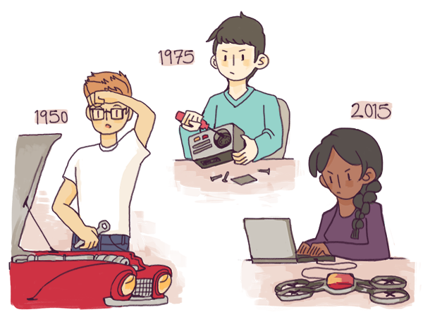
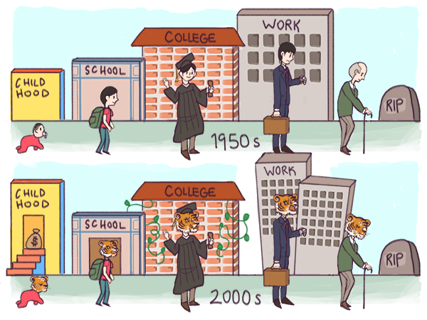

Getting Reoriented
There are four major reasons we underestimate the increasing power of software. Three of these reasons drove similar patterns of miscalibration in previous technological revolutions, but one is unique to software.

First, as futurist Roy Amara noted, "We tend to overestimate the effect of a technology in the short run and underestimate the effect in the long run." Technological change unfolds exponentially, like compound interest, and we humans seem wired to think about exponential phenomena in flawed ways.1 In the case of software, we expected too much too soon from 1995 to 2000, leading to the crash. Now in 2015, many apparently silly ideas from 2000, such as home-delivery of groceries ordered on the Internet, have become a mundane part of everyday life in many cities. But the element of surprise has dissipated, so we tend to expect too little, too far out, and are blindsided by revolutionary change in sector after sector. Change that often looks trivial or banal on the surface, but turns out to have been profound once the dust settles.
Second, we have shifted gears from what economic historian Carlota Perez calls the installation phase of the software revolution, focused on basic infrastructure such as operating systems and networking protocols, to a deployment phase focused on consumer applications such as social networks, ridesharing and ebooks. In her landmark study of the history of technology,2 Perez demonstrates that the shift from installation to deployment phase for every major technology is marked by a chaotic transitional phase of wars, financial scandals and deep anxieties about civilizational collapse. One consequence of the chaos is that attention is absorbed by transient crises in economic, political and military affairs, and the apocalyptic fears and utopian dreams they provoke. As a result, momentous but quiet change passes unnoticed.
Third, a great deal of the impact of software today appears in a disguised form. The genomics and nanotechnology sectors appear to be rooted in biology and materials science. The "maker" movement around 3d printing and drones appears to be about manufacturing and hardware. Dig a little deeper though, and you invariably find that the action is being driven by possibilities opened up by software more than fundamental new discoveries in those physical fields. The crashing cost of genome-sequencing is primarily due to computing, with innovations in wet chemistry playing a secondary role. Financial innovations leading to cheaper insurance and credit are software innovations in disguise. The Nest thermostat achieves energy savings not by exploiting new discoveries in thermodynamics, but by using machine learning algorithms in a creative way. The potential of this software-driven model is what prompted Google, a software company, to pay $3B to acquire Nest: a company that on the surface appeared to have merely invented a slightly better mousetrap.
These three reasons for under-estimating the power of software had counterparts in previous technology revolutions. The railroad revolution of the nineteenth century also saw a transitional period marked by systematically flawed expectations, a bloody civil war in the United States, and extensive patterns of disguised change -- such as the rise of urban living, grocery store chains, and meat consumption -- whose root cause was cheap rail transport.
The fourth reason we underestimate software, however, is a unique one: it is a revolution that is being led, in large measure, by brash young kids rather than sober adults.3
This is perhaps the single most important thing to understand about the revolution that we have labeled software eating the world: it is being led by young people, and proceeding largely without adult supervision (though with many adults participating). This has unexpected consequences.
As in most periods in history, older generations today run or control all key institutions worldwide. They are better organized and politically more powerful. In the United States for example, the AARP is perhaps the single most influential organization in politics. Within the current structure of the global economy, older generations can, and do, borrow unconditionally from the future at the expense of the young and the yet-to-be-born.
But unlike most periods in history, young people today do not have to either "wait their turn" or directly confront a social order that is systematically stacked against them. Operating in the margins by a hacker ethos -- a problem solving sensibility based on rapid trial-and-error and creative improvisation -- they are able to use software leverage and loose digital forms of organization to create new economic, social and political wealth. In the process, young people are indirectly disrupting politics and economics and creating a new parallel social order. Instead of vying for control of venerable institutions that have already weathered several generational wars, young people are creating new institutions based on the new software and new wealth. These improvised but highly effective institutions repeatedly emerge out of nowhere, and begin accumulating political and economic power. Most importantly, they are relatively invisible. Compared to the visible power of youth counterculture in the 1960s for instance, today's youth culture, built around messaging apps and photo-sharing, does not seem like a political force to reckon with. This culture also has a decidedly commercial rather than ideological character, as a New York Times writer (rather wistfully) noted in a 2011 piece appropriately titled Generation Sell.4 Yet, today's youth culture is arguably more powerful as a result, representing as it does what Jane Jacobs called the "commerce syndrome" of values, rooted in pluralistic economic pragmatism, rather than the opposed "guardian syndrome" of values, rooted in exclusionary and authoritarian political ideologies.
Chris Dixon captured this guerrilla pattern of the ongoing shift in political power with a succinct observation: what the smartest people do on the weekend is what everyone else will do during the week in ten years.
The result is strange: what in past eras would have been a classic situation of generational conflict based on political confrontation, is instead playing out as an economy-wide technological disruption involving surprisingly little direct political confrontation. Movements such as #Occupy pale in comparison to their 1960s counterparts, and more importantly, in comparison to contemporary youth-driven economic activity.
This does not mean, of course, that there are no political consequences. Software-driven transformations directly disrupt the middle-class life script, upon which the entire industrial social order is based. In its typical aspirational form, the traditional script is based on 12 years of regimented industrial schooling, an additional 4 years devoted to economic specialization, lifetime employment with predictable seniority-based promotions, and middle-class lifestyles. Though this script began to unravel as early as the 1970s, even for the minority (white, male, straight, abled, native-born) who actually enjoyed it, the social order of our world is still based on it. Instead of software, the traditional script runs on what we might call paperware: bureaucratic processes constructed from the older soft technologies of writing and money. Instead of the hacker ethos of flexible and creative improvisation, it is based on the credentialist ethos of degrees, certifications, licenses and regulations. Instead of being based on achieving financial autonomy early, it is based on taking on significant debt (for college and home ownership) early.
But by the 1970s, industrialization had succeeded so wildly, it had undermined its own fundamental premises of interchangeability in products, parts and humans. As economists Jeffrey Greenwood and Mehmet Yorkuglu5 argue in a provocative paper titled 1974, that year arguably marked the end of the industrial age and the beginning of the information age. Computer-aided industrial automation was making ever-greater scale possible at ever-lower costs. At the same time, variety and uniqueness in products and services were becoming increasingly valuable to consumers in the developed world. Global competition, especially from Japan and Germany, began to directly threaten American industrial leadership. This began to drive product differentiation, a challenge that demanded originality rather than conformity from workers. Industry structures that had taken shape in the era of mass-produced products, such as Ford's famous black Model T, were redefined to serve the demand for increasing variety. The result was arguably a peaking in all aspects of the industrial social order based on mass production and interchangeable workers roughly around 1974, a phenomenon Balaji Srinivasan has dubbed peak centralization.6
One way to understand the shift from credentialist to hacker modes of social organization, via young people acquiring technological leverage, is through the mythological tale of Prometheus stealing fire from the heavens for human use.
The legend of Prometheus has been used as a metaphor for technological progress at least since Mary Shelley's Frankenstein: A Modern Prometheus. Technologies capable of eating the world typically have a Promethean character: they emerge within a mature social order (a metaphoric "heaven" that is the preserve of older elites), but their true potential is unleashed by an emerging one (a metaphoric "earth" comprising creative marginal cultures, in particular youth cultures), which gains relative power as a result. Software as a Promethean technology emerged in the heart of the industrial social order, at companies such as AT&T, IBM and Xerox, universities such as MIT and Stanford, and government agencies such as DARPA and CERN. But its Promethean character was unleashed, starting with the early hacker movement, on the open Internet and through Silicon-Valley style startups.

As a result of a Promethean technology being unleashed, younger and older face a similar dilemma: should I abandon some of my investments in the industrial social order and join the dynamic new social order, or hold on to the status quo as long as possible?
The decision is obviously easier if you are younger, with much less to lose. But many who are young still choose the apparent safety of the credentialist scripts of their parents. These are what David Brooks called Organization Kids (after William Whyte's 1956 classic, The Organization Man7): those who bet (or allow their "Tiger" parents8 to bet on their behalf) on the industrial social order. If you are an adult over 30, especially one encumbered with significant family obligations or debt, the decision is harder.
Those with a Promethean mindset and an aggressive approach to pursuing a new path can break out of the credentialist life script at any age. Those who are unwilling or unable to do so are holding on to it more tenaciously than ever.
Young or old, those who are unable to adopt the Promethean mindset end up defaulting to what we call a pastoral mindset: one marked by yearning for lost or unattained utopias. Today many still yearn for an updated version of romanticized9 1950s American middle-class life for instance, featuring flying cars and jetpacks.
How and why you should choose the Promethean option, despite its disorienting uncertainties and challenges, is the overarching theme of Season 1. It is a choice we call breaking smart, and it is available to almost everybody in the developed world, and a rapidly growing number of people in the newly-connected developing world.
These individual choices matter.
As historians such as Daron Acemoglu and James Robinson10 and Joseph Tainter11 have argued, it is the nature of human problem-solving institutions, rather than the nature of the problems themselves, that determines whether societies fail or succeed. Breaking smart at the level of individuals is what leads to organizations and nations breaking smart, which in turn leads to societies succeeding or failing.
Today, the future depends on increasing numbers of people choosing the Promethean option. Fortunately, that is precisely what is happening.
[1] See for example, the phenomenon of hyperbolic discounting, one of the major biases that affect human temporal reasoning.
[2] Carlota Perez, Technological Revolutions and Financial Capital, 2003.
[3] Though the widespread perception that startup founders are relatively young is debatable, it is clear that software allows talented individuals to begin their entrepreneurial journeys much earlier than other technologies in history, simply due to the availability and accessibility of the technology at low cost. By contrast, major business leaders in the Robber Baron age, such as Cornelius Vanderbilt and John D. Rockefeller embarked on their empire building journeys in middle age.
[4] William Deresiewicz, Generation Sell, New York Times, 2011.
[5] Jeremy Greenwood and Mehmet Yorukoglu, 1974, Carnegie-Rochester Conference Series on Public Policy, 1997.
[6] Personal communication.
[7] See William Whyte, The Organization Man, first published in 1956 and David Brooks, The Organization Kid, The Atlantic Monthly, 2001.
[8] Amy Chua, Battle Hymn of the Tiger Mother, 2011.
[9] Stephanie Coontz, The Way we Never Were: American Families and the Nostalgia Trap, 1993.
[10] Daron Acemoglu and James Robinson, Why Nations Fail, 2013.
[11] Joseph Tainter, The Collapse of Complex Societies, 1990.